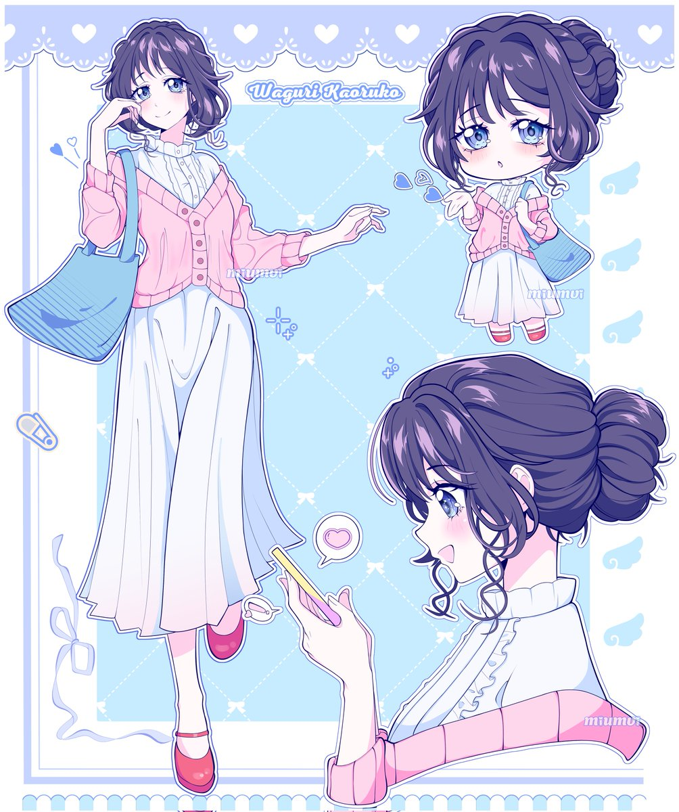
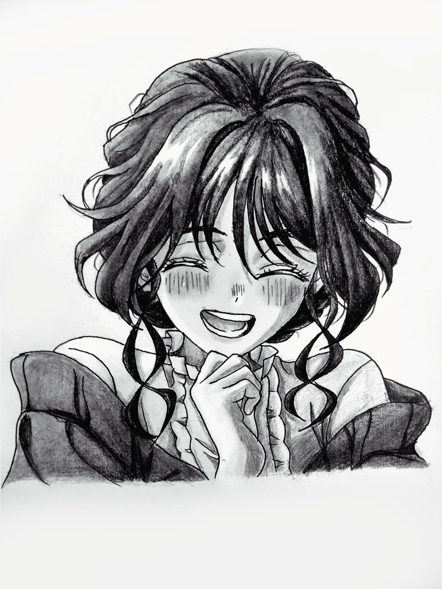
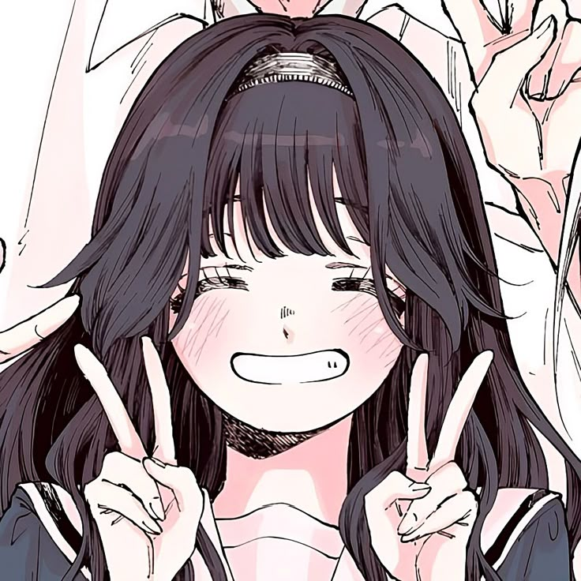
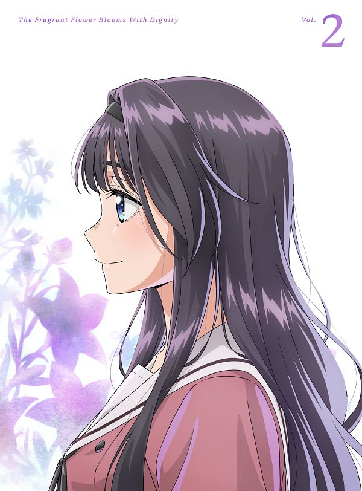
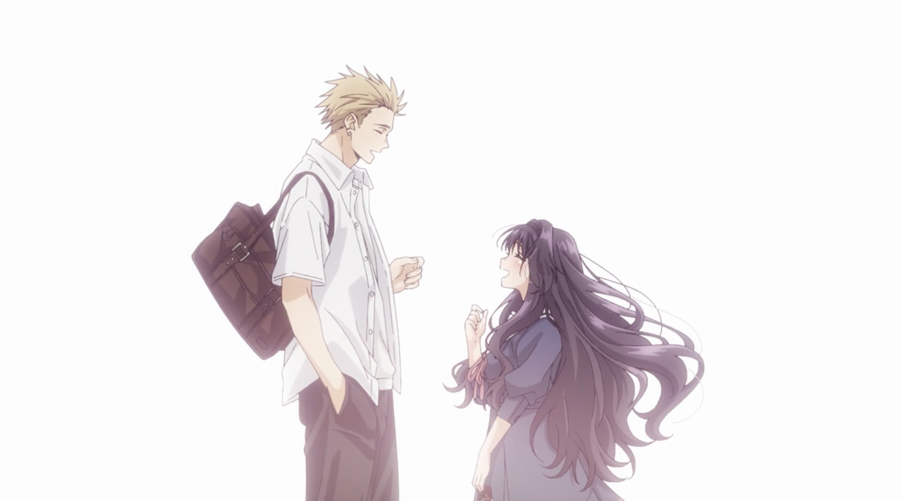
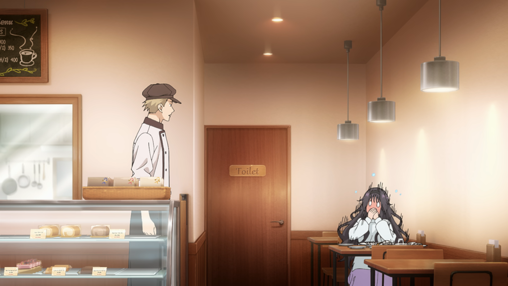
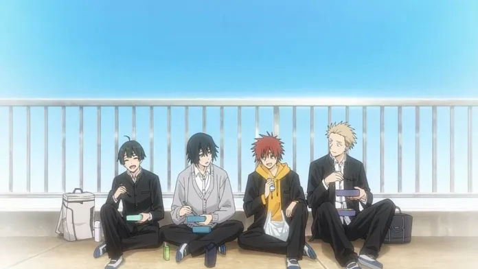
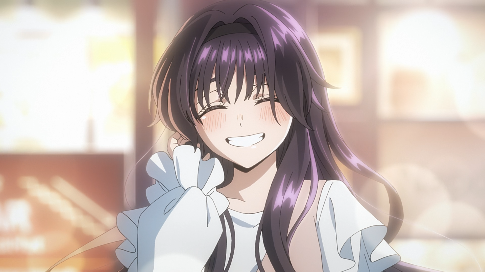
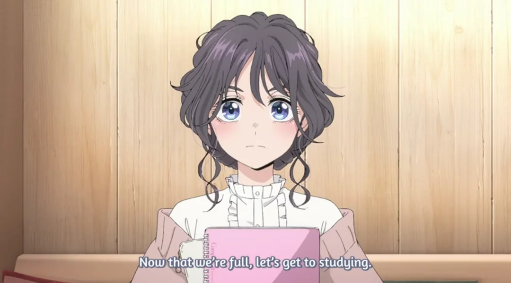

✦ Blooming Memories ✦




A delicate tale of walls crumbling, hearts opening, and fragrance found in unexpected souls.
"Two schools, two worlds."
Chidori and Kikyo have always been rivals. But when Rintaro steps into Waguri's bakery, the scent of fresh bread begins to dissolve years of prejudice.
"He was terrifying. She saw a boy."
Everyone flinches at Rintaro's glare — except Kaoruko. She offers him a melon bread and a smile. That small gesture becomes the seed of change.
"Walls begin to crack."
Through shared lunches and quiet conversations, they learn about each other's hidden struggles. Their bond becomes a quiet rebellion against stereotypes.
"A fragrant friendship blooms."
What started in a bakery transforms into a circle of trust. They discover that dignity isn't about being strong — it's about letting someone see your thorns.
↻ tap dots · auto cycle




"Like flowers that bloom in silence, true dignity is the strength to be kind."
"Despite the thorns of the world, we choose to soften, we choose to grow."
"The most fragrant revolution is a quiet one, rooted in unwavering tenderness."
— Kaoruko Waguri's wisdom —







“intimidating gaze, golden heart”
Feared because of his looks, Rintaro lives a lonely life until he wanders into Chidori's bakery. The warmth he finds there, especially from Waguri, slowly melts his defenses. He learns that true strength is allowing someone to see your scars. His journey from outcast to cherished friend is the soul of this story.
“sunshine wrapped in flour”
Kaoruko believes in the goodness of people. She doesn't see a delinquent when she looks at Rintaro — she sees a boy who needs a friend. Her kindness is unwavering, and it becomes the catalyst for change. She embodies the fragrant flower: blooming with dignity, no matter the soil.

“friends become sanctuary”
Subaru, Saku, and the others bridge the gap between rival schools. They prove that understanding can dismantle prejudice. Together, they create a space where everyone can be themselves — a garden where even the most fragile flowers can bloom with dignity.
a quiet revolution in a noisy world
"Every petal holds a story
of overcoming prejudice."
It's the quiet dignity of choosing kindness — again and again — that makes the fragrance last.
to be soft
In a world that rewards hardness, choosing tenderness is an act of radical bravery.
through connection
We don't bloom in isolation. True growth happens when we let others see our roots.
in bloom
The most fragrant flower is the one that opens despite the storm. That is dignity.
— Kaoruko's wisdom —